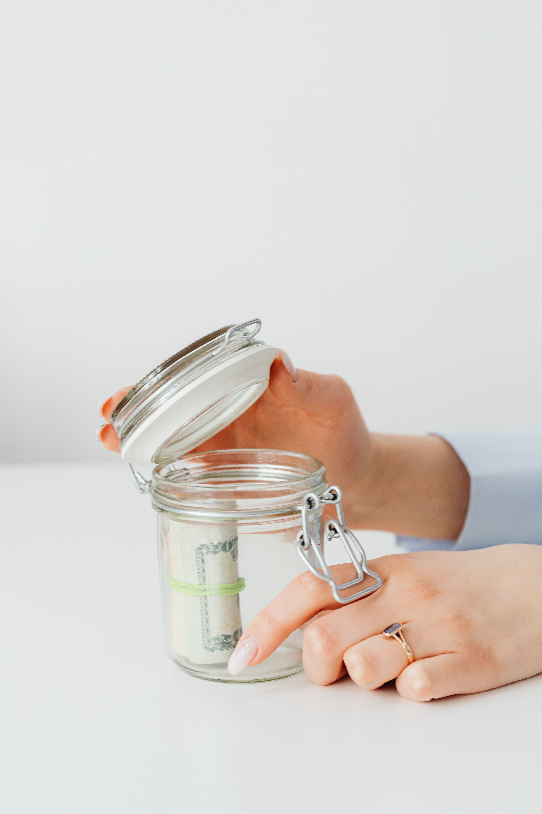

Money is usually described through numbers. We talk about salaries, prices, savings, debt, profits and expenses. But behind every financial number is a person making a decision. That person may be confident, frightened, excited, impatient, generous, ambitious or under pressure. These feelings can influence what happens to the money after it is earned.
This is why understanding money requires more than knowing how to add and subtract. Two people can earn similar incomes and finish the year in completely different financial positions. One may have built savings, reduced debt and learned a useful skill. The other may have spent nearly everything while trying to maintain a lifestyle that was difficult to afford.
The difference is often found in behaviour. Income matters, but the habits surrounding income matter too. The way a person reacts to temptation, handles pressure, thinks about the future and responds to unexpected problems can shape financial outcomes over many years.
1. Why the Psychology of Money Matters
Personal finance is personal for a reason. Every person comes from a different background. Some people grow up seeing careful saving at home. Others grow up in families where income disappears quickly because there are many responsibilities. Some people experience financial hardship early in life, while others have access to resources that make money management easier.
These experiences can shape attitudes toward spending and saving. Someone who has experienced scarcity may become extremely cautious with money. Someone who has rarely faced financial difficulty may be more comfortable taking risks or spending freely.
Neither experience automatically determines the future. People can learn. A person can recognise an unhealthy habit, understand why it exists and gradually replace it with a better one.
2. Your First Income Can Be a Test
Getting your first salary can feel like a major achievement. For a young person who has spent years studying or searching for employment, receiving regular income can create a powerful feeling of independence.
The danger is assuming that the entire salary represents spending money. It does not. Income has several responsibilities. It can provide food, shelter, transport and communication. It can support family members. It can help pay debts. It can create savings. It can finance training or useful equipment.
If everything is spent immediately, the salary may improve the present without improving the future.
A young worker in Kenya can experience this after finding a first job in Meru, Nairobi, Mombasa or another town. A worker in the United States can experience a similar temptation after receiving a first full-time paycheque. The currencies and costs are different, but the emotional experience of finally having personal income can be similar.
3. Learn the Difference Between Needs and Wants
One of the foundations of responsible money management is knowing the difference between something you need and something you simply want.
Food, necessary housing, essential transport, required medicine and important work expenses may be genuine needs. A newer phone, expensive clothing, frequent restaurant meals or entertainment may be wants.
Wanting something is not a financial crime. People deserve to enjoy money they have worked for. The issue is whether the purchase fits the person's circumstances and priorities.
A person with strong savings and manageable responsibilities may be able to afford a purchase that would be dangerous for someone with debt and no emergency reserve. The same item can therefore be reasonable for one person and irresponsible for another.
4. Social Media Can Distort Financial Reality
Social media has made comparison easier than ever. A person can open a phone and immediately see photographs of expensive cars, holidays, phones, restaurants, clothing and impressive houses.
The problem is that a photograph does not provide a complete financial statement. It cannot tell you whether the item was bought with savings, borrowed money, credit, a gift or income that the person can comfortably afford.
Young people can therefore fall into the trap of spending money to create an image. They may purchase things they do not really need because they fear appearing unsuccessful.
True financial progress is often quiet. Building savings does not always produce an impressive photograph. Paying a debt does not usually attract hundreds of comments. Learning a skill may not look glamorous. Yet those actions can improve a person's future more than an expensive night out.
5. Saving When Your Income Is Small
A common belief is that saving should begin after someone becomes wealthy. This sounds reasonable, but it can become a permanent excuse.
If a person waits for a perfect income before developing a saving habit, lifestyle expenses may grow whenever income increases. A larger salary can simply create larger spending.
Starting small can teach a valuable lesson: not every amount received must be consumed immediately.
A young worker may decide to save a fixed amount every month. Another person with irregular income may save whenever money comes in. The amount should be realistic enough to maintain the habit without preventing essential needs from being met.
The first achievement is not the size of the account. It is proving that you can consistently reserve money for your future.
6. Save Before Your Money Disappears
Many people follow the pattern of spending first and saving whatever remains. Unfortunately, ordinary expenses can consume everything. Transport, food, airtime, subscriptions, family requests and unexpected costs can leave nothing behind.
A better approach is to decide on a reasonable saving amount when income arrives. Essential responsibilities should still be handled, but savings should have a deliberate place in the plan.
This approach changes saving from an accidental event into a planned responsibility.
7. Fixed-Term and Fixed-Deposit Savings
Fixed-term and fixed-deposit savings products can be useful for people who want to place money aside for a particular period. In general, the saver deposits an agreed amount with a financial institution for an agreed term. Depending on the product, the institution may pay interest according to the applicable terms.
The exact conditions are important. Different institutions and products can have different minimum deposits, interest rates, maturity periods, renewal arrangements, withdrawal conditions and charges.
Before opening such an account, a person should read the current terms carefully. They should understand when the money becomes available, what happens if they need it earlier, whether early withdrawal affects the interest, whether there are fees and what happens when the agreed period ends.
This type of account can be useful psychologically because access to the money may be less convenient. That inconvenience can help someone who frequently spends savings impulsively.
For example, imagine a young worker who receives income and immediately spends whatever remains in an ordinary account. If part of their planned savings is placed into an appropriate fixed-term product after reviewing the conditions, the money may be less tempting to spend casually.
However, people should not assume that every savings goal belongs in a fixed deposit. Emergency money may need to remain accessible. If an unexpected expense happens before maturity, restrictions or consequences for early withdrawal could create difficulties.
The right product depends on the person's circumstances, financial goals, access needs and understanding of the terms.
8. Delayed Gratification Builds Financial Strength
Delayed gratification means choosing not to satisfy every desire immediately. It is a simple idea, but it can be difficult when spending provides an instant reward.
Imagine someone who wants a new phone. Buying it today creates excitement. Waiting may feel boring. But if the current phone works and the money could help create an emergency reserve, waiting may provide greater value.
The same principle can apply to entertainment, clothing, travel and other purchases. The objective is not to reject enjoyment. The objective is to decide when enjoyment fits the bigger plan.
9. Small Expenses Can Become Large Habits
Large purchases are easy to notice, but repeated small expenses can reveal important habits.
A daily purchase may appear insignificant on its own. Repeated for weeks and months, however, the total can become meaningful. Multiple subscriptions can have the same effect. Frequent delivery charges, unnecessary transport, impulse shopping and entertainment can quietly consume money.
This does not mean every small purchase should be eliminated. Instead, track your spending honestly. Once the numbers are visible, you can decide which expenses are valuable and which ones happen mainly because you have become accustomed to them.
10. Looking Wealthy Is Different From Being Secure
Financial appearance and financial security are not the same thing.
Someone can have expensive clothes, a powerful car and frequent restaurant visits while carrying substantial debt and having very little savings. Another person may use an older phone, dress simply and live below their means while quietly building financial security.
The first person may look wealthier to strangers. The second may have greater financial freedom.
Young people should remember this distinction because trying to impress other people can become extremely expensive.
11. Understand Debt Before Accepting It
Debt is not automatically good or automatically bad. Its effect depends on the purpose, cost, repayment terms and the borrower's ability to repay.
Borrowing for something that can strengthen earning capacity can have a different purpose from borrowing repeatedly for short-lived consumption. Even when borrowing has a sensible purpose, the full cost must be understood.
Before accepting debt, understand how much must be repaid, the interest or other charges, the repayment schedule and the consequences of missing payments.
A particularly dangerous habit is borrowing simply to maintain a lifestyle that current income cannot support. If every month requires additional borrowing to maintain normal spending, the problem may be the lifestyle rather than the income alone.
12. Kenya and America Have Different Systems but Similar Money Emotions
Kenya and the United States have different financial systems, currencies, employment markets, taxation structures and costs of living. Financial products and regulations can therefore differ substantially.
A young Kenyan may think about mobile money, bank savings, SACCOs, chama arrangements, business income and local employment. A young American may deal with credit scores, retirement accounts, insurance, student loans and different forms of consumer credit.
Those differences matter. Financial advice should always take local rules and circumstances into account.
But human emotions can cross borders. A Kenyan can spend to impress friends. An American can do the same. A Kenyan can postpone saving because income feels too small. An American can make the same excuse despite earning more.
Both can experience fear when an emergency arrives. Both can become impatient when they see someone else appearing successful. Both can learn discipline.
13. Save for the Person You Will Become
Saving is difficult partly because the future is invisible. Spending gives an immediate reward, while saving often produces no exciting event today.
Yet savings purchase something valuable: options.
Money saved today can provide choices when employment changes, an opportunity appears, an important family responsibility arises or an expensive problem needs attention.
This means saving is not simply about accumulating money. It is about giving your future self more room to make decisions without desperation.
14. “Save Me Today, I Save You Tomorrow.”
I strongly believe in the message: “Save me today, I save you tomorrow.”
The sentence can be understood as a conversation between the person you are today and the person you will become in the future.
When you save today, you are helping your future self. That future version of you may need money for education, equipment, a business opportunity, emergency expenses, relocation, family responsibilities or another important purpose.
Present-you may want to spend everything. Future-you may be grateful that you did not.
Saving is therefore a form of patience and self-respect. It means accepting that the future deserves a portion of today's effort.
15. Build an Emergency Fund
Life rarely follows a perfect budget. A phone can break. Transport costs can increase. Employment can become uncertain. A family member may need help. A business can experience a difficult period.
An emergency fund can help absorb some of these shocks. The amount a person needs depends on income, responsibilities, employment stability and personal circumstances.
Emergency money should be treated differently from entertainment money. If it is repeatedly used for ordinary spending, it cannot provide much protection when a genuine emergency arrives.
16. Give Every Part of Your Money a Purpose
Money becomes easier to manage when different amounts have clear jobs. A person may separate money for essential expenses, savings, emergencies, planned purchases and personal enjoyment.
The exact structure does not have to be complicated. The purpose is to reduce confusion.
When all money appears to be available for spending, the entire balance can feel like disposable income. When savings have a specific purpose, spending them becomes a deliberate decision rather than an automatic one.
17. Learn Before You Invest
The desire to make money grow can make inexperienced people vulnerable to unrealistic promises.
Online platforms can make financial opportunities look effortless. Some opportunities can be legitimate, while others can involve high risk, hidden conditions or fraud.
Before investing, understand how the product works. Ask where the expected return comes from, what could cause a loss, what fees apply, how the money can be withdrawn and which rules or regulators apply.
Never put money into something simply because another person appears rich online. A photograph, video or testimonial is not proof that an investment is appropriate.

18. Family Responsibilities and Money
In Kenya, a young person who finds employment may quickly become an important source of support for parents, siblings or relatives. Helping family can be meaningful, but it should be balanced with personal financial responsibilities.
Similar pressures exist in many communities around the world. People may feel that earning money means they should immediately solve every problem around them.
A sustainable approach is to understand what you can genuinely afford to give. Helping someone today should not necessarily mean destroying your ability to support yourself tomorrow.
19. Do Not Measure Your Worth Only by Income
Income matters because money pays for real needs. But income should not become the entire measure of a person's worth.
A person can experience unemployment, a failed business or a difficult financial period without becoming a worthless human being.
Separating identity from money makes it easier to examine mistakes honestly. Instead of thinking, “I failed, so everything is finished,” a person can think, “This financial decision did not work. What can I learn from it?”
20. Increase Your Ability to Earn
Saving is important, but there is a limit to how much can be saved when income is extremely small and essential expenses consume most of it.
Improving earning ability can therefore be part of a long-term money plan. Young people can develop professional skills, technical abilities, communication, sales, digital skills, trade skills or other capabilities that can create legitimate opportunities.
The goal is not to chase every opportunity that appears online. The goal is to become more capable and useful in a field that can support sustainable income.
21. When Your Income Increases, Do Not Increase Everything Immediately
A salary increase can be exciting. It can also become a test.
If every additional amount is immediately converted into higher rent, expensive entertainment, a larger car payment and more shopping, a person may remain financially stretched despite earning more.
When income rises, consider allowing savings and useful goals to grow too. Enjoyment can increase, but it should happen deliberately.
This matters because expenses that become normal can be difficult to reduce later. A lifestyle can expand faster than a person's ability to recognise that it has expanded.
22. A Simple Money System for Young People
A young person does not need an unnecessarily complicated financial system. A basic plan can begin with five questions.
First, how much money actually comes in? Second, what expenses are essential? Third, how much can realistically be saved? Fourth, what debts must be paid? Fifth, how much remains for optional spending?
After answering those questions, review the results regularly.
If essential expenses are too high, look for realistic reductions. If income is too low, focus on increasing earning ability. If optional spending is consuming too much, identify the habits behind it.
23. Track Your Spending Honestly
A budget is useful only when it reflects reality. Some people create beautiful budgets but never record what they actually spend.
Tracking expenses can reveal patterns that are difficult to see from memory. It can show how much goes toward transport, food, entertainment, subscriptions, shopping and other categories.
The purpose is not to feel guilty about every purchase. The purpose is to make invisible habits visible.
24. Do Not Let Friends Decide Your Financial Future
Friends can influence spending without intending to cause harm. A group may decide to eat somewhere expensive, travel, attend an event or buy something together.
Saying no can feel uncomfortable, especially for young people who want to belong.
But friendship should not require financial self-destruction. You can participate in relationships without matching every person's spending level.
A simple sentence such as “That is outside my budget this month” can be enough. A person who respects you should be able to understand that.
25. Major Purchases Need More Thought
Large purchases deserve a cooling-off period. When something is expensive, waiting before paying can reveal whether the desire is temporary or genuine.
Consider the full cost, not only the purchase price. A car may require fuel, maintenance, insurance and other expenses. A new electronic device may require accessories or replacement costs. A larger home may increase rent or utility expenses.
Looking beyond the initial price helps prevent decisions based only on excitement.
26. Financial Discipline Should Create Freedom
Responsible money management should not make life miserable. The purpose of discipline is not to eliminate every enjoyable experience.
A person can budget for entertainment, travel, food outside the home and other pleasures. The important thing is that these expenses should fit within the wider financial plan.
When essentials are covered, savings are progressing and debt is managed, reasonable enjoyment can be part of a healthy financial life.
27. What I Have Learned About Money
I am Eliphas Mutwiri Peter from Kenya, and I believe that financial discipline begins long before a person becomes wealthy.
You do not need a huge bank balance to learn how to save. You do not need a perfect salary to begin tracking expenses. You do not need to become rich before learning the difference between a need and a want.
Small habits can prepare a person for larger responsibilities.
I also believe young people should stop measuring progress only through possessions. Paying a debt can be progress. Building emergency savings can be progress. Learning a useful skill can be progress. Starting a small legitimate business can be progress. Developing the discipline to say no to unnecessary spending can be progress.
Not every important financial achievement can be photographed.
28. Questions to Ask Before Spending
Before making a non-essential purchase, ask yourself whether you actually need it. Ask whether you can afford it without damaging an important goal. Ask whether you are buying it because it provides genuine value or because you want approval from other people.
Ask whether you would still want it after waiting for several days. Ask whether the purchase will create another expense. Ask whether the money could solve a more important problem elsewhere.
A short pause can prevent a long financial regret.
29. Prepare for a Future You Cannot Predict
Nobody knows exactly what the next five or ten years will bring. Employment can change. Businesses can succeed or fail. Families grow. Opportunities appear unexpectedly. Economic conditions can change.
Because the future cannot be predicted perfectly, flexibility is valuable. Savings, useful skills, manageable debt and responsible spending can give a person more choices when circumstances change.
You do not have to know exactly what will happen. You can still prepare yourself to respond.
30. Final Message to Young People
If you are young and your income is currently small, do not conclude that saving is pointless. Begin with an amount you can realistically maintain. Learn where your money goes. Avoid unnecessary comparison. Be cautious with debt. Build skills. Understand financial products before using them. Protect emergency money. Give your future goals a place in today's budget.
Do not be ashamed of starting small. Every large financial foundation begins with decisions that may look ordinary at the beginning.
You may not be able to save a large amount today. You may not be able to invest heavily. You may not be able to afford everything you want. That does not mean you are failing.
What matters is whether your decisions are gradually moving you toward greater stability.
Learn to earn. Learn to save. Learn to wait. Learn to say no. Learn to plan. Learn to recover from mistakes.
The future does not require perfection. It requires direction.
Frequently Asked Questions
What is the psychology of money?
The psychology of money is the study of the emotions, habits, beliefs, experiences and behaviours that influence how people earn, spend, save, borrow and make financial decisions.
Why do people spend money even when they know they should save?
Spending can provide an immediate emotional reward, while saving often benefits a future version of the person. Social pressure, habits, advertising, stress and the desire for enjoyment can also influence spending decisions.
Should young people save even when they earn little?
A realistic saving habit can be useful even when income is limited. The amount should not prevent essential needs from being met. The early goal is often to develop consistency and financial discipline.
What is a fixed-deposit savings account?
It is generally a savings arrangement where money is placed with a financial institution for an agreed period under specific terms. The product may provide interest, but rates, conditions, maturity rules and early withdrawal consequences vary by institution and product.
Should emergency savings be locked away?
Emergency funds may need to be accessible when an unexpected expense occurs. Before placing money into a fixed-term product, understand the withdrawal conditions and keep appropriate accessible funds for genuine emergencies.
Why should young people avoid comparing themselves with social media?
Social media normally shows selected moments rather than a complete picture of someone's financial situation. Comparing your real responsibilities with another person's carefully presented lifestyle can encourage unnecessary spending.
Is spending money always bad?
No. Responsible spending can include enjoyment and personal goals. The important question is whether spending is affordable and whether it fits alongside essential expenses, savings and other obligations.
How can someone become better at managing money?
Start by understanding income and expenses, separating needs from wants, saving deliberately, managing debt carefully and reviewing spending regularly. Improving financial knowledge and earning skills can also strengthen long-term financial decisions.

About the Author
I am Eliphas Mutwiri Peter from Kenya. I write about people, life experiences, money, practical lessons and ideas that can encourage readers to think more carefully about everyday decisions.
This article is written for education and general information. Financial products, interest rates, regulations and individual circumstances can change. Readers should check current information with the relevant financial institution or qualified professional before making important financial decisions.